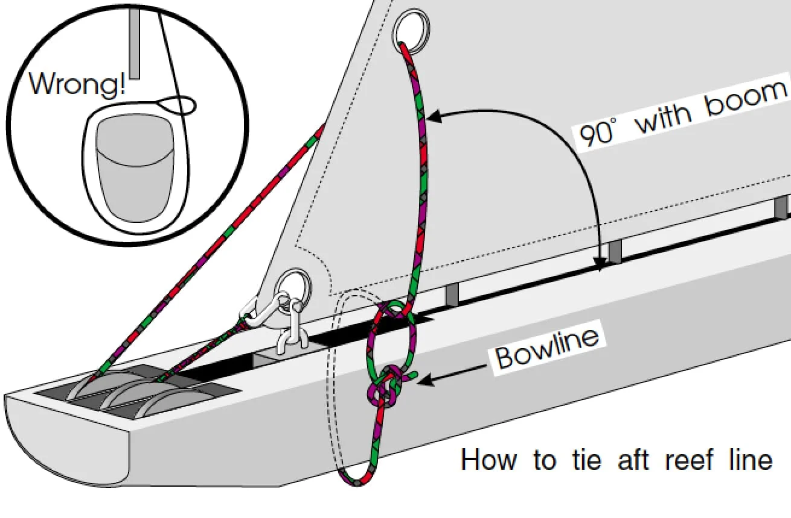

Sail Handling
Mainsail#
Preparing the mainsail#
- Remove the sail cover. Fold and stow it.
- Attach the halyard to the head of the mainsail ensuring it is led correctly from the masthead to the head of the sail and not wrapped around the mast or rigging.
- Undo the coils of the mainsheet and make sure it is flaked to run free and has a figure-of-eight stopper, but keep it jammed until the crew is finished working around the boom.
- Ensure the vang, cunningham, and outhaul are slackened but do not have excessive slack.
Hoisting the mainsail#
- Remove all sail ties from the mainsail
- Bring the yacht head-to-wind.
- Ensure the vang, cunningham, and outhaul are slack (but do not have excessive slack that could tangle).
- Send a person to the starboard side of the mast to hoist the mainsail by hauling on the mainsail halyard out and down while taking up slack through an open jammer in the cockpit.
- Keep a close eye on the mainsail as it's raised to ensure no fouling or jams. Stop if necessary.
- Close the jammer and tighten the halyard using the cockpit winch. Watch the luff of the sail to ensure correct tension and that the sail is set correctly.
- Tighten the outhaul and vang, and tidy the remainder of the halyard and stow it inside.
- The helm can now bear away and begin sailing.
Reefing the mainsail#
Tip
The DS37s are not always rigged with a reefing line of sufficient length to be able to preemptively rig the reefing line but still raise the full mainsail. If the weather forecast calls for a reef in the main at any point later in your sail, it's best to rig and reef the mainsail from the beginning. Reefing the main while already underway in overpowered conditions can be quite challenging, and is best avoided unless necessary.
- Remove all sail ties from the mainsail
- Bring the yacht head-to-wind.
- Ensure the vang, cunningham, and outhaul are slack (but do not have excessive slack that could tangle).
- Rig the reefing pennant using either of the reefing pennant variations outlined below.
- Send a person to the starboard side of the mast to partially hoist the mainsail and hook the reefing cringle to the rams horn. Then continue hauling on the mainsail halyard out and down while taking up slack through an open jammer in the cockpit.
- Keep a close eye on the mainsail as it's raised to ensure no fouling or jams. Stop if necessary.
- Close the jammer and tighten the halyard using the cockpit winch. Watch the luff of the sail to ensure correct tension and that the sail is set correctly.
- Tighten the vang, tension the new outhaul (using the reefing pennant), and tidy the remainder of the halyard and stow it inside.
- Tidy the foot of the sail using the elastic sail ties. If the mainsail is loose-footed, tie the foot of the sail through the reef points to itself. If the mainsail foot is run through the track in the boom, the foot of the sail will need to be tied through the reef points and to the boom.
- The helm can now bear away and begin sailing.
Warning
If the foot of the sail is tied to the boom (and not to itself), you must be absolutely certain to remove the reefing tidy lines prior to shaking out the reef and raising the mainsail. Failure to do so will rip the mainsail.
Reefing Pennant Variation 1 - Fixed Eye#
- Open the reefing pennant jammer
- Haul sufficient slack in by pulling on the reefing pennant at the end of the boom
- Remove the stopper knot in the reefing pennant
- Run the reefing pennant from the boom end through the reefing cringle at the leech of the mainsail
- Continue down and through the small metal eye on the underside of the boom below the reefing cringle
- Secure with a fixed bowline.
Reefing Pennant Variation 2 - Running Bowline#
- Open the reefing pennant jammer
- Haul sufficient slack in by pulling on the reefing pennant at the end of the boom
- Remove the stopper knot in the reefing pennant
- Run the reefing pennant from the boom end through the reefing cringle at the leech of the mainsail
- Continue down under the foot of the sail and around the boom (make sure the pennant is run aft of the small metal eye on the underside of the boom)
- Secure with a running bowline around the standing end of the reefing pennant.
Below: A diagram illustrating Reefing Pennant Variation 2 
Shaking out a reef#
-
Remove any sail ties or elastic ties used to tidy the foot of the mainsail with the reefing points. (If underway, complete this while still sailing upwind and the boom is stationary.)
Warning
Failure to remove the sail ties will likely result in ripping the mainsail.
-
Bring the yacht head-to-wind.
- Ensure the vang and cunningham are slack (but do not have excessive slack that could tangle).
- Take the main halyard up with 3 wraps on the starboard cockpit winch.
- Open the main halyard jammer and ease the halyard to drop the mainsail just enough so the crew at the mast can unhook the reefing cringle from the rams horn.
-
Untie the reefing pennant from the aft end of the boom and remove it from the reefing cringle at the luff of the mainsail.
Tip
If this step cannot be completed safely due to the boom swinging, consider dropping the main completely, taking in the mainsheet to secure the boom, and removing the reefing pennant.
-
Tie a figure of eight stopper knot at the end of the reefing pennant so it does not get lost in the boom, and pull the slack through the closed starboard jammer such that the stopper sits neatly at the aft end of the boom.
- Crew at the starboard side of the mast hoist the mainsail by hauling on the mainsail halyard out and down while taking up slack through an open jammer in the cockpit.
- Keep a close eye on the mainsail as it's raised to ensure no fouling or jams. Stop if necessary.
- Close the jammer and tighten the halyard using the cockpit winch. Watch the luff of the sail to ensure correct tension and that the sail is set correctly.
- Tighten the outhaul and vang. Tidy the remainder of the halyard and stow it inside.
- The helm can now bear away and begin sailing.
Dropping the mainsail#
- Flake the mainsail halyard so that it will run out clean without fouling.
- Take a few wraps of the mainsail halyard around the winch, with the jammer still closed.
- Bring the yacht head-to-wind.
- Ensure the vang, cunningham, and outhaul are slack (but do not have excessive slack that could tangle).
- When ready to drop, open the mainsail jammer and whip the coils up and off of the winch to release the halyard.
- Crew at the mast may help bringing the sail down by pulling the luff down.
- Once the sail is completely down, tighten the mainsheet sufficient to stop the boom swinging.
- Tidy the mainsail around the boom using sail ties.
- Coil and tidy the mainsail halyard and mainsheet.
Stowing the mainsail#
- Push all of the mainsail to one side of the boom (the leeward side being generally easier).
- With crew at the mast and the aft of the boom, flake the sail from one side of the boom to the other in even folds. Keep pulling the sail aft to keep it tidy.
- Hold the folds in place using sail ties.
- Secure the mainsail cover to protect the sail.
- Coil mainsheet in a gasket coil and fasten to hang under the boom.
Headsail#
Preparing the headsail#
- Attach the headsail tack shackle directly to the D ring at the foot of the forestay. Ensure that when the sail is raised the shackle will not be twisted at a strange angle which would impact the shape of the sail. An easy way to test this is to attach the tack shackle and first piston hank and pull the first piston hank upwards to see what the luff along bottom part of the sail will look like when stretched.
- Begin attaching all the piston hanks to the forestay, starting from the bottom of the sail and working your way up.
- Open the headsail halyard jammer, slacken the headsail halyard sufficient to attach it to the head of the headsail using the shackle.
- Rig the headsail port and starboard sheets. If using the jib, make sure to run the sheets through both sheet cars and inside the shrouds. If using the genoa, run the sheets through the first sheet car (the aftmost sheet car) and outside the shrouds. Finish each sheet with a bowline to the clew of the headsail.
Hoisting the headsail#
The DS37 has a simpled hanked on headsail with either a jib or genoa. Some jibs have battens, while others do not.
- Remove any sail ties and open the headsail halyard jammer.
- Slacken the headsail sheets.
- Haul in on the headsail halyard at the mast and take up slack through the open jammer.
- Watch the sail as it goes up to ensure it does not foul or jam.
- Close the headsail halyard jammer while tensioning the halyard using the winch. Watch the luff of the headsail to get the correct tension.
- Tidy the remainder of the halyard and stow it inside.
Dropping the headsail#
- Flake the headsail halyard so that it will run out clean without fouling.
- Take a few wraps of the headsail halyard around the winch, with the jammer still closed.
- When ready to drop, open the headsail jammer and whip the coils up and off of the winch to release the halyard.
- The crew forward will pull down on the luff and gather the headsail on deck.
- Keep tension on the headsail sheet to prevent the sail going into the water.
- Coil up and tidy the halyard and sheets.
Stowing the headsail#
- Bring the headsail onto the dock.
- Stretch the foot of the sail along the dock.
- Working together, kneel on the sail and grab a fold of sail and place it on the foot.
- Keep the foot stretched and keep flaking the sail.
- Once the head is reached, fold the sail from the clew towards the luff.
- Use a webbing sail ties to hold the bundle fast.
- Stow the headsail in the cabin on the starboard berth.
Spinnaker#
Rigging the spinnaker#
There are two main ways to rig the spinnaker, depending on whether you're doing matchracing or fleetracing. These differ whether the topmark is rounded clockwise (matchrace), or counter-clockwise (fleetrace). For matchracing, you're doing the spinnaker set on a port tack, for fleet racing on a starboard tack.
The following describes the setup for matchracing; for fleet racing the setup is mirrored (i.e, pole on starboard, sail on port).
- Prepare the spinnaker below. Open the forward hatch on the bow deck, find the head of the spinnaker, and run to both clews. This is to ensure that the spinnaker is not twisted.
- Rig the barber haulers. They go through the small blocks by the side stays, and through the small cleats by the cockpit. It should not matter if the jib esheet crosses over or under (but this is often a personal preference). Don't forget a figure-of-eight stopper knot at the end of the barber hauler lines.
-
Bring the spinnaker pole on deck, place it on the port side inside of the side stays. Rig the uphaul.
Important
When rigging the spinnaker pole uphaul, make sure that the pole is under the port jib sheet, so that it can run freely (otherwise you'll have trouble getting out of the marina).
-
Rig the spinnaker sheet. To easily get the headsail/spinnaker combination right, put the headsail on the port side. The spinnaker sheet goes on starboard from the block by the jib sheet winch to the back, crosses over itself on the way forward (the spinnaker flies up, and the sheet flies up as well), goes through the starboard barber hauler, passes the starboard shrouds outside and goes to the spinnaker (starboard clew). Secure with a bowline, or another knot of your choice.
- Rig the guy. This mostly follows the spinnaker sheet: Go through the block by the port jib sheet winch, to the back of the boat, cross over itself, through the port barber hauler, outside of the shrouds, around the front stay (outside of the sail!), and to the port clew of the spinnaker. Ensure that the guy runs outside of the port jib sheet.
- Rig the spinnaker halyard. Make sure the halyard runs free (it tends to entangle itself around the mast or stays), and mount it to the head of the spinnaker, coming from starboard.
-
Decide whether you want figure-of-eight stopper knots in your spinnaker sheets or not.
Note
If you choose to have knots at the end of the spinnaker sheets, it will not be possible to fully depower the spinnaker, and it may start pulling you in directions you don't want to go. If you don't have knots, you'll lose the spinnaker (it'll not be pulling you anywhere), but continuing to sail with it will be difficult. Racers tend to opt for knots, and cruisers as well as beginners on the spinnakers should not put knots in. You can also factor in crew knowledge and wind conditions, personally I'd opt for knots in light-wind conditions, and no knots outside of racing in heavier wind.
Hoisting the spinnnaker#
You can watch this video (in danish) for visuals of the process. This is again describing a matchrace-style set on a port tack, and assumes a standard racing crew setup with positions Skipper, mainsail, trimmer, tailer and bowman.
- Make sure that the spinnaker sheets are on the winches in the cockpit.
- (Bowman) Put the guy into the front hook of the pole. Ensure that you take the line from the port side, not the starboard side that goes into the hole! Take out the head and the clews of the sail onto the deck ("preloading the spinnaker").
- (Tailer, Bowman) Hoist the pole until it's horizontal. The tailer pulls the line in the cockpit (no winch needed!), the bowman clicks it in the mast (racing: Set a mark on the uphaul for how far you need to pull it). The port jib sheet has to run free if the pole is hoisted under the jib sheet.
- (Trimmer) opens the barber hauler on the starboard side.
- (Everybody) Hoisting the spinnaker: Skipper holds a downwind course, bowman is at the mast to pull the halyard, tailer pulls the halyard at the pit. It is not put on a winch, but pumped to get it to the top. Once the spinnaker is up, bowman announces "top". The trimmer gets the sheet, mainsail gets the guy. Both pull these lines appropriately while the spinnaker is raised, keeping the sail leewards while it's being raised. When it's up, the guy is pulled in, while the sheet is eased to rotate the sail towards port (aim for approximately keeping the pole and the boom in a line). Once the sail is standing, the trimmer takes over the guy from the mainsail.
- (Bowman, Tailer) Take down the foresail together, tailer opens the cleat, bowman ensures it doesn't fall in the water and secures it on deck with a sailtie.
- (Tailer) The tailer is now free to either take over the guy from mainsail or from the trimmer, or to grind the spinnaker winches in close communication with the trimmer. Either setup is possible, and depends on personal preferences and skill level of trimmer and tailer.
Gybing the spinnaker#
This assumes the same crew setup as above, and that the trimmer controls both the guy and the sheet, and the tailer grinds the spinnaker winches as required. If you opt for a different setup, you need to add a step where the trimmer and tailer switch lines.
We're assuming that we're on a port tack and gybe to a starboard tack.
- (Skipper) The skipper holds a dead downwind course, take in the mainsail if required for safety.
- (Trimmer, Tailer) The spinnaker is trimmed for a downwind course by rotating it to the port side (guy in, sheet eased). This is important even in racing, where you might not hold a dead downwind course yet.
- (Tailer, Trimmer) The tailer pulls in the starboard barber hauler, in communication with the trimmer. This stabilizes the sail, but might require the trimmer to ease the sheet a bit to offset the shortening of the line by the barber hauler.
- (Bowman) The bowman now unhooks the pole. It is important here to unhook the sheet from the pole ASAP, as otherwise moving around the pole will trim the sail in unintended ways, and might lead to the sail collapsing. If you raised the pole with the port jib sheet hanging over it, now is the time to take that off, so it goes under the pole.
- (skipper, trimmer, tailer, mainsail) Hold the boat stable on a downwind course and the spinnaker flying. If the spinnaker collapses before the gybe is completed, gybe back, get it flying, and start over.
- (Bowman) Cleat in the starboard spinnaker sheet into the front of the pole. You ought to be able to grab it easily if the starboard barber hauler is tight.
- (Skipper, Mainsail) Gybe the mainsail, be sure to let it out quickly, otherwise the boat will point upwind, making gybing the spinnaker very hard.
- (Bowman) Stand stable with the back to the mast, push the pole forward and out to the forestay. Don't push to the side, you'll not have the strength to do that. Click the pole into the mast, and announce "On".
- (Trimmer, Tailer) Watch the bowman carefully. Follow with the guy and ease it enough so that the bowman can get the pole all the way out. Be very careful when you pull the guy in while the pole is not clicked in the mast yet: It's very easy for you to make the job of the bowman impossible.
- (Skipper) Keep the dead downwind course until the pole is in. If you go up too early, your bowman will not have the strength to put in the pole.
- (Trimmer, Tailer) Once the pole is in, rotate over the spinnaker, and trim it to course, by pulling in the guy, and easing the sheet. Tailer releases the sheet barber hauler in communication with the trimmer.
- (Skipper) Sets a broad reach to beam reach course.
Taking down the spinnaker#
The following description assumes that you have followed the previous instructions, done an uneven number of gybes (so you're on a starboard tack), and want to be able to hoist the spinnaker again on a port tack. This is a standard matchrace situation.
If you rather want to take the spinnaker down on the side the sail is on, you need to adapt the side where you hoist the headsail, have the trimmer throw off the guy instead of the sheet to collapse the spinnaker, and the bowman has to pull the spinnaker under the headsail into the hole. Otherwise, the description still applies.
Note that you can take down the spinnaker on both sides, and an experienced crew benefits from training takedowns on both sides.
- (Mainsail, Bowman) Mainsail pulls the port jib sheet tight, and locks it. The bowman helps to move the headsail over to port if needed. This requires that during the gybe, the port jib sheet was correctly removed from the pole.
- (Bowman, Tailer) Hoist the headsail. The bowman pulls at the mast, the tailer at the pit. There is no winch available for hoisting, so the halyard is pumped at the mast.
- (Skipper) Go on a dead downwind course (alternative for racing: Send the mainsail as "human pole" to either the shrouds or the frontstay, depending on course).
- (Trimmer, Tailer) Trim the spinnaker to the new course.
- (Bowman, Tailer) Take down the pole by unlocking it on both sides, the tailer will help operate the jammer, and receive the pole. Store it under the port jib sheet again. Careful when pulling it back to not hit any crew!
- (Bowman, Tailer, Trimmer) The Bowman grabs the foot of the spinnaker by collecting the guy, which is easily accessible, as the barber hauler is pulled tight. The trimmer releases the sheet, which should collapse the spinnaker. The tailer opens the halyard, and controls the downward speed. Not too fast to drop the sail in the water, but also not too slow, so that the bowman pulls against the sail. The trimmer also releases the guy, so that nothing is keeping the spinnaker up. The bowman collects the sail from the starboard side of the boat.
- (Skipper) The boat is now ready to go upwind.
- (Trimmer) Pull in the port barber hauler on the next port tack.
- (Bowman) Goes down and checks the spinnaker on the upwind leg, so that it's ready to be hoisted again.
De-rigging and stowing the spinnaker#
- Undo all the lines and stow them away.
- Close the hole before someone falls into it.
- The spinnaker should be checked again, collecting the head and clews. They should be separated in the storage bag.
- The spinnaker is stored in the club house, not on the boat.